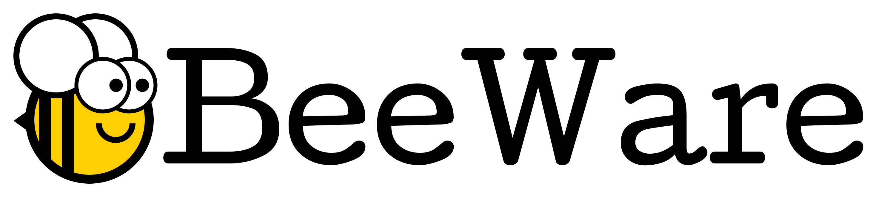
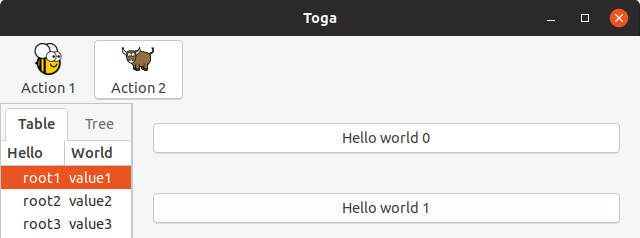
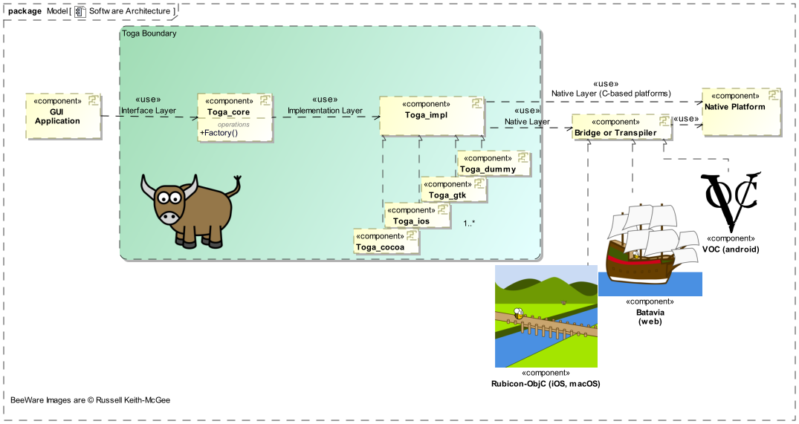
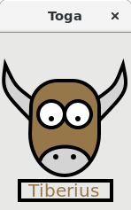

5 Steps to Build Python Native GUI Widgets for BeeWare
Part of my work at Ford Motor Company is to use Model-Based Systems Engineering through languages like SysML to help design safety in to complex automated and electrified technologies. In my free time I took over maintaining a UML tool called Gaphor with the aim of eventually turning it in to a simple SysML tool for beginners. I'm sure I'll be writing about this much more in the future.
Eventually I got really frustrated with the current set of GUI toolkits that are available for Python. I want the ability to write an app once and have it look and feel great on all of my devices, but instead I was dealing with toolkits that are wrapped or introspected around C or C++ libraries, or visually look like a blast from past. They made me feel like I was going against the grain of Python instead of writing great Pythonic code.
If you haven't heard of BeeWare yet, it is a set of software libraries for cross-platform native app development from a single Python codebase and tools to simplify app deployment. When I say cross-platform and native, I mean truly that. The project aims to build, deploy, and run apps for Windows, Linux, macOS, Android, iPhone, and the web. It is native because it is actually that platform's native GUI widgets, not a theme, icon pack, or webpage wrapper.
A little over a year ago, I started to contribute to the BeeWare project. I needed a canvas drawing widget for the app I am working on, I saw that this was not supported by BeeWare, so I went ahead and created it. Based on my experience, this blog post details how I would create a new widget from scratch, now that I have done it before, with the hope that it helps you implement your own widget as well.
If you are new to BeeWare, I recommend to start out with the Briefcase and Toga Tutorials, and then the First-time Contributor's Guide.

The current status of the BeeWare project, at the time of writing this, is that it is a solid proof of concept. Creating a simple app on macOS, Linux, or iOS is definitely possible. In fact there is an app called Travel Tips on Apple's App Store that was created by Russell Keith-Magee as a demonstration. Support for some of the other platforms like Windows and Android is lagging behind some, so except some very rough edges.
This alpha status may not be so exciting for you if you are just trying to build an app, but I think it is very exciting for those that want to contribute to an open source project. Although there are many ways to get involved, users keep asking how they can build a GUI widget that isn't yet supported. I think this is a great way to make a significant contribution.
A GUI widget forms the controls and logic that a user interacts with when using a GUI. The BeeWare project uses a GUI widget toolkit called Toga, and below is a view of what some of the widgets look like in Linux.

There are button, table, tree, and icon widgets in the example. Since I contributed a canvas drawing widget, I will be using that for the example of how you could contribute your own widget to the project.
There are three internal layers that make up every widget:
- The Interface layer
- The Implementation layer
- The Native layer

The Interface layer provides the public API for the GUI application that you are building. This is the code you will type to build your app using Toga.
The Interface layer calls public methods that are in the Toga_core portion of the project and this is where this Interface layer API is defined. Toga_core also provides any abstract functionality that is independent of the platform that Toga is running on, like setting up and running the app itself.
The Implementation layer connects Toga_core to the Toga_impl component. Toga_impl is the platform backends like Toga_ios, Toga_cocoa, and Toga_gtk. A factory method in Toga_core automatically selects and initializes the correct implementation objects based on the platform it is running on. Toga_dummy is also a type of Toga_impl backend, and it is used for smoke testing without a specific platform to find simple failures.
The Native layer connects the Toga_impl's to the Native Platform. For C language based platforms, Toga_impl directly call the native widgets. For example with Gtk+ on Linux, the Toga_gtk directly calls the Gtk+ widgets through PyGObject. For other platforms, more intermediate work may be required through a bridge or transpiler:
- macOS and iOS, the Rubicon-ObjC project provides a bridge between Objective-C and Python.
- Web, Batavia provides a javascript implementation of the Python virtual machine.
- Android, VOC is a transpiler that converts Python in to Java bytecode.
I know there is a lot there, but understanding the software architecture of Toga together with the surrounding projects and interfaces will be key to implementing your own widget. With that background information out of the way, lets not delay any further, and jump in to building a widget.
Step 0
Pick your development platform
- Normally pick the platform that you are most familiar with
- macOS and Gtk+ are the most developed :thumbsup:
- Is this a mobile only widget (camera, GPS, etc)?
This seems somewhat obvious, since the platform you select will most likely be based on the laptop or other device you are using right now. But do consider this. Most of my experience developing widgets are on Gtk+ and Cocoa so this is where I am coming from. Implementing widgets on other platforms is definitely needed as well, but it may be an additional challenge due to those platforms not as well developed with Toga yet. These other platforms may be more challenging, but they are also the areas where the BeeWare project needs the most help, so if you have some experience with them or feel especially brave, definitely go for it.
Step 1
Research your widget
- How do you create this widget on different platforms
- Think, brainstorm, whiteboard, and discuss how you would want to create and manipulate this widget with Python
For example, this is how you would draw a rectangle on a Canvas on different platforms:
- Tkinter
canvas = Tk.Canvas() canvas.create_rectangle(10, 10, 100, 100, fill="C80000") canvas.pack()
- wxpython
wx.Panel.Bind(wx.EVT_PAINT, OnPaint) def OnPaint(self, evt): dc = wx.PaintDC() dc.SetBrush(wx.Brush(wx.Colour(200, 0, 0))) dc.DrawRectangle(10, 10, 100, 100)
- HTML canvas
var c = document.getElementById("myCanvas"); var ctx = c.getContext("2d"); ctx.fillStyle = "rgb(200, 0, 0)"; ctx.fillRect(10, 10, 100, 100);
- Gtk+
drawingarea = Gtk.DrawingArea() drawingarea.connect("draw", draw) def draw(da, ctx): ctx.set_source_rgb(200, 0, 0) ctx.rectangle(10, 10, 100, 100) ctx.fill()
Step 2
Create the Pythonic API for your interface layer
- Write your API documentation first
- The API provides the set of clearly defined methods of communication (layers) between the software components
- Documentation Driven Development
- This is iterative with Step 1
Start with explaining what your widget is and what it is used for. Think about the use cases of the widget. What types of apps are users going to build with this widget? These are the scenarios that your widget needs to be able to support. How would a user want to use your widget? When looking at the Canvas widgets from my research, I noticed that the current drawing widgets were very procedural, you have to create your canvas drawing using many steps. For example, you have to first set the color to draw with, then draw an object, and then fill in that object.
Python has the context manager and the "with" statement, and making use of this for a canvas allows the user to better break up the draw operations with some nesting. It also allows for automatically starting or closing drawing of a closed path for the user. This is an example of the types of things that you can take advantage of in an API that was designed for Python. It is easy to try to copy the API that you are familiar with, but I think you can really make your widget stand out by taking a step back and looking at how you can make an API that users will really enjoy using.
Here is an example of writing the initial explanation and widget API for the canvas widget:
The canvas is used for creating a blank widget that you can
draw on.
Usage
--
Simple usage to draw a colored rectangle on the screen using
the arc drawing object:
import toga
canvas = toga.Canvas(style=Pack(flex=1))
with canvas.fill(color=rgb(200, 0, 0)) as fill:
fill.rect(10, 10, 100, 100)
Once that is complete, now might be a good time to ask for feedback to see if you have missed any use cases or if others have any ideas of how to improve the public API of the widget. One way to collect feedback would be to submit an issue or a "work in progress" pull request to the Toga project, or ask for feedback on the Gitter channel.
Next, start to work out the structure of your Toga_core code based on your API. I recommend creating the class and method definitions and add the docstrings to outline what each portion of the software does and what arguments and return values it provides. This is part of the overall documentation that will be generated by Sphinx for your widget, and creating this before writing your code will provide the next level of API documentation.
Here is an example of how that structure and docstrings would look for a canvas widget:
class Canvas(Context, Widget): """Create new canvas. Args: id (str): An identifier for this widget. style (:obj:`Style`): An optional style object. factory (:obj:`module`): A python module that is capable to return a implementation of this class. """
def rect(self, x, y, width, height): """Constructs and returns a :class:`Rect <Rect>`. Args: x (float): x coordinate for the rectangle. ... """
Step 3
Implement your Toga_core widget using TDD
- Write a test for each function of the widget outlined in the API from Step 3
- Check that the tests fail
- Specify the implementation layer API
- Write the core code for the widget to call the implementation layer
Test Driven Development is a test-first technique to write your tests prior to or in parallel with writing the software. I am being opinionated here, because you don't have to write your code using this process. But, I think this will really help you think about what you want from the code as you implement these different API layers.
Toga_core has a "tests" folder, and this is where you need to create your tests for the widget. Sometimes it can be challenging to know what tests to write, but in the previous step you already outlined what the use cases and scenarios are for using your widget, and the API to make use of the widget. Break this up in to atomic tests to check that you can successfully create the widget, and then make use of and modify the widget using all of the outlined scenarios.
Here is a test to check that the widget is created. The canvas._impl.interface
is testing the call to the Toga_impl component ("_impl") and then back to the
Toga_core component ("interface"). In other words we are testing that the canvas object
is the same object as we go to the Implementation layer to the Toga_impl and
then back across the Implementation layer to the Toga_core. The object should be
equal as long as it was created successfully. The second line of the test
assertActionPerformed is using the dummy backend to test that the canvas was
created, and I'll discuss that more in Step 4 below.
def test_widget_created(): assertEqual(canvas._impl.interface, canvas) self.assertActionPerformed(canvas, "create Canvas") ```` Further along in my test creation I also wanted to check that the user could modify a widget that was already created. So I created a test that modifies the coordinates and size of a rectangle. ```Python def test_rect_modify(): rect = canvas.rect(-5, 5, 10, 15) rect.x = 5 rect.y = -5 rect.width = 0.5 rect.height = -0.5 canvas.redraw() self.assertActionPerformedWith( canvas, "rect", x=5, y=-5, width=0.5, height=-0.5 )
Once you are done creating your tests and make sure that they are failing as expected, it is time to move on to filling in all of those Toga_core classes and objects that you left blank in the previous step.
Toga provides a base Widget class that all widgets derive from. It defines the interface for core functionality for children, styling, layout and ownership by specific App and Window. Below our class Canvas is derived from Widget and is initialized:
class Canvas(Widget): def __init__(self, id=None, style=None, factory=None): super().__init__(id=id, style=style, factory=factory)
As part of the class initialization, Toga also uses the factory method to
determine the correct Toga_impl platform, and then connect it from the
Toga_core to Toga_implself._impl and back the other way using
interface=self:
# Create a platform specific implementation of Canvas self._impl = self.factory.Canvas(interface=self)
Finally, we fill in our methods to call the creation of the rectangle on the Toga_impl component using the Implementation layer:
def rect(self, x, y, width, height): self._impl.rect( self.x, self.y, self.width, self.height )
Step 4
Implement the Toga_impl widget on the dummy backend
- Dummy is for automatic testing without a native platform
- Code the implementation layer API endpoint, create a method for each call of the API
- Check that all tests now pass
When your widget is integrated with Toga, we want unit tests to run with the test suite automatically during continuous integration. It may be difficult during these tests to start up every platform and check that your widget is working correctly, so there is a Toga_impl called dummy that doesn't require a platform at all. This allows for smoke testing to make sure that the widget correctly calling the Implementation layer API.
Now go ahead and implement the Toga_impl widget on the dummy backend. There needs to be methods for each call from the Toga_core to the Toga_impl. Below we check that the Canvas create and rect method actions were invoked through Implementation layer API calls.
class Canvas(Widget): def create(self): self._action("create Canvas") def rect(self, x, y, width, height): self._action( "rect", x=x, y=y, width=width, height=height )
You now should be able to run and pass all the tests that you created in Step 3.
Step 5
Implement the Toga_impl widget on your platform backend
- Copy toga_dummy and create a new endpoint for the platform you chose in Step 1
- Make use of the native interface API for this widget on your platform
If after your research in Step 1, you aren't feeling confident in how the widget should work on your platform, now would be a good time to take a break to go practice. Build a simple canvas drawing app for your platform using the native widgets. Once you have done that, now is the time to create the Toga_impl for your platform that calls those native widgets on your platform.
In my example, Gtk+ uses an event callback to do native drawing. So I create a Gtk.DrawingArea to draw on when my Canvas widget is created, and then I connect that drawing callback to the gtk_draw_callback function which then calls a method in Toga_core through the Implementation layer:
class Canvas(Widget): def create(self): self.native = Gtk.DrawingArea() self.native.interface = self.interface self.native.connect("draw", self.gtk_draw_callback) def gtk_draw_callback(self, canvas, gtk_context): self.interface._draw(self, draw_context=gtk_context)
Some platforms like Android or Cocoa will require transpiling or bridging to the native platform calls since those platforms using a different programming language. This may require the creation of extra native objects to, for example, reserve memory on those platforms. Here is an example of what this extra TogaCanvas class would like with the Cocoa platform:
class TogaCanvas(NSView): @objc_method def drawRect_(self, rect: NSRect) -> None: context = NSGraphicsContext.currentContext.graphicsPort()
Finally create each method for your native implementation. Below we create an implementation of the rectangle creation that calls Gtk+'s cairo drawing:
def rect(self, x, y, width, height, draw_context): draw_context.rectangle(x, y, width, height)
After you most likely do some troubleshooting of your widget to get it to work properly with your platform, you now should have a complete widget!

Tada! You did it, Submit a PR!
I would be interested in how it goes for you, drop me a line with your experience creating a widget.
2018-11-10: minor editorial updates.
Comments